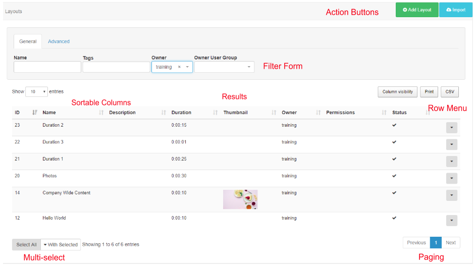

Grids
The CMS presents many of the entities (Layouts, Media, Campaigns) as tabular data called Grids. Each grid has a number of elements that combine to create a flexible administration tool that is easy to read and understand.
The following diagram is the Layout grid annotated with each of its elements.

Action Buttons
Action buttons located at the top right of the page allow for common actions such as Add Layout.
Filter Form
Most grids have a filter form which is used to restrict the results in some way - for example all Layouts belonging to a particular owner or by Tag.
Results
Once the CMS has searched for the criteria included in the filter fields, results will be shown in the grid data table. Use the Column visibility button to select/de-select which columns should be presented in the data table.
Sortable Columns
Most columns can be sorted by default. Where the column has an up or down arrow the Shift key can be used to multi-sort the column.
Row Menu
Each row may also have an action menu for things that can be done to that specific row. This menu can be accessed by clicking the down arrow in the right-most column of each row.
Multi-select
Some grids include the ability to multi-select rows and perform bulk actions. These are actions that can be run on all of the selected rows at the same time. Click on rows to select and use the With Selected drop-down button, located at the bottom of the grid, to access the bulk action menu for your selected rows.
Paging
If available a paging control will be shown that allows the User to switch between multiple pages of results.